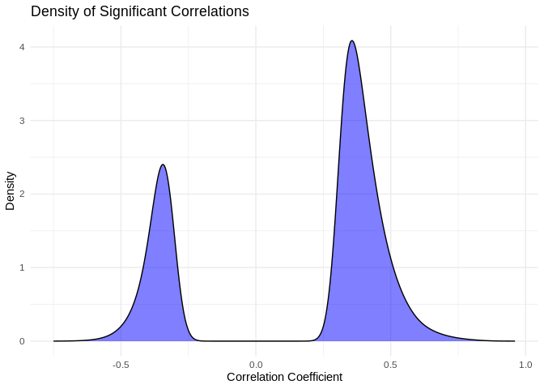
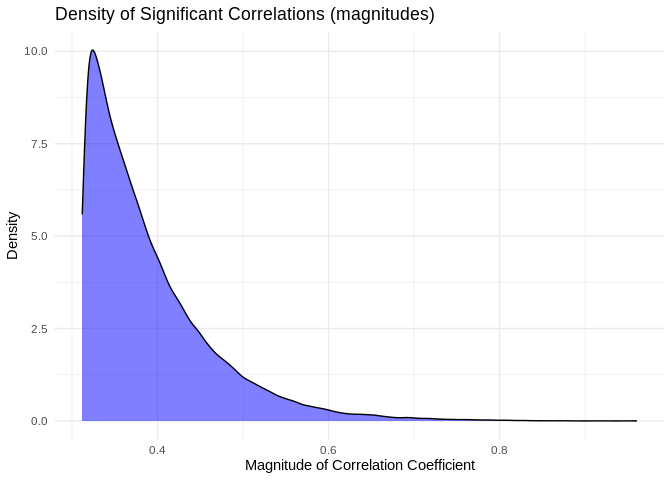
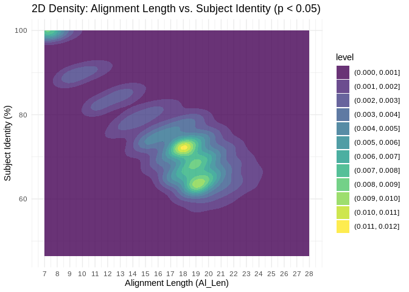

Code
Rendered code
Output files
I’ve already used miRanda to predict miRNA-lncRNA binding. Now I want to assess coexpression for miRNA-lncRNA pairs using Pearson’s correlation coefficient.
#library(energy)
library(tidyr)
library(dplyr)
library(readr)
library(ggplot2)Now that we’ve found putative interactions, including those with high complementarity, in 10-Apul-lncRNA-miRNA-miRanda we need to validate by examining patterns of coexpression. We’d expect a putatively-interacting miRNA-lncRNA pair to be highly coexpressed, and we’d expect a strong negative relationship to indicate either a lncRNA sponging miRNA OR an miRNA targeting lncRNA for degradation.
0.1 Obtain Pearson’s coefficient correlation values
Read in, format, and normalize data
miRNA_counts <- read.delim("../output/03.10-D-Apul-sRNAseq-expression-DESeq2/Apul_miRNA_ShortStack_counts_formatted.txt")
# Simplify column names
colnames(miRNA_counts) <- sub("_.*", "", colnames(miRNA_counts))
colnames(miRNA_counts) <- sub("X", "", colnames(miRNA_counts))
# Remove any miRNA with 0 counts across samples
miRNA_counts<-miRNA_counts %>%
mutate(Total = rowSums(.[, 1:5]))%>%
filter(!Total==0)%>%
dplyr::select(!Total)
lncRNA_counts_full <- read.delim("../output/08-Apul-lncRNA/counts.txt", skip=1)
rownames(lncRNA_counts_full) <- lncRNA_counts_full$Geneid
lncRNA_counts <- lncRNA_counts_full %>% select(-Geneid, -Chr, -Start, -End, -Strand, -Length)
# Format lncRNA column names to match the miRNA names
colnames(lncRNA_counts) <- sub("...data.", "", colnames(lncRNA_counts))
colnames(lncRNA_counts) <- sub(".sorted.bam", "", colnames(lncRNA_counts))
# Order lncRNA column names to match the miRNA column order
lncRNA_counts <- lncRNA_counts[, colnames(miRNA_counts)]
# Check that the columns match name and order for both dataframes
colnames(lncRNA_counts) == colnames(miRNA_counts)## [1] TRUE TRUE TRUE TRUE TRUE TRUE TRUE TRUE TRUE TRUE TRUE TRUE TRUE TRUE TRUE
## [16] TRUE TRUE TRUE TRUE TRUE TRUE TRUE TRUE TRUE TRUE TRUE TRUE TRUE TRUE TRUE
## [31] TRUE TRUE TRUE TRUE TRUE TRUE TRUE TRUE TRUE TRUE# Remove any lncRNAs with 0 for all samples
lncRNA_counts <- lncRNA_counts %>%
mutate(Total = rowSums(.[, 1:5]))%>%
filter(!Total==0)%>%
dplyr::select(!Total)
# Function to normalize counts (simple RPM normalization)
normalize_counts <- function(counts) {
rpm <- t(t(counts) / colSums(counts)) * 1e6
return(rpm)
}
miRNA_norm <- normalize_counts(miRNA_counts)
lncRNA_norm <- normalize_counts(lncRNA_counts)# Function to calculate PCC and p-value for a pair of vectors
calc_pcc <- function(x, y) {
result <- cor.test(x, y, method = "pearson")
return(c(PCC = result$estimate, p_value = result$p.value))
}
# Create a data frame of all miRNA-lncRNA pairs
pairs <- expand.grid(miRNA = rownames(miRNA_norm), lncRNA = rownames(lncRNA_norm))
# Calculate PCC and p-value for each pair
pcc_results <- pairs %>%
rowwise() %>%
mutate(
pcc_stats = list(calc_pcc(miRNA_norm[miRNA,], lncRNA_norm[lncRNA,]))
) %>%
unnest_wider(pcc_stats)
# Adjust p-values for FDR
pcc_results <- pcc_results %>%
mutate(adjusted_p_value = p.adjust(p_value, method = "fdr"))
# Save as csv
write.csv(pcc_results, "../output/14.2-Apul-miRNA-lncRNA-coexpression/Apul-PCC_miRNA_lncRNA-full.csv")Check
# Read in results
pcc_results <- read.csv("../output/14.2-Apul-miRNA-lncRNA-coexpression/Apul-PCC_miRNA_lncRNA-full.csv")
# Use this code to download the PCC results if needed
#pcc_results <- read.csv("https://gannet.fish.washington.edu/kdurkin1/ravenbackups/timeseries_molecular/D-Apul/output/14.2-Apul-miRNA-lncRNA-coexpression/Apul-PCC_miRNA_lncRNA-full.csv")
nrow(pcc_results)## [1] 950283nrow(pcc_results%>% filter(abs(PCC.cor) > 0.90))## [1] 3nrow(pcc_results %>% filter(p_value < 0.05))## [1] 81605nrow(pcc_results %>% filter(p_value < 0.05 & abs(PCC.cor) > 0.90))## [1] 3of the 950,283 possible miRNA-lncRNA interactions, 3 have a Pearson’s correlation coefficient with a magnitude above 0.9, and 81,605 have a significant correlation (pval<0.05). All of the coefficients with a magnitude >0.9 are significant.
I find it interesting that so many putative interactions have significant pvalues, but so few have correlation coefficients above 0.9. What does the distribution of significant correlation coefficients look like?
ggplot(pcc_results[pcc_results$p_value < 0.05,], aes(x = PCC.cor)) +
geom_density(fill = "blue", alpha = 0.5) +
labs(title = "Density of Significant Correlations",
x = "Correlation Coefficient",
y = "Density") +
theme_minimal()
ggplot(pcc_results[pcc_results$p_value < 0.05,], aes(x = abs(PCC.cor))) +
geom_density(fill = "blue", alpha = 0.5) +
labs(title = "Density of Significant Correlations (magnitudes)",
x = "Magnitude of Correlation Coefficient",
y = "Density") +
theme_minimal()
Mean of the absolute value of correlation for significant correlation coefficients is {r} round(mean(abs(pcc_results[pcc_results$p_value < 0.05,]$PCC.cor)),2)
1 Incorporate miRanda target prediction results
1.1 full lncRNA
I realized that the lncRNA counts matrix includes some duplicate lncRNA, where two or more distinct lncRNA IDs share the exact same genomic coordinates. As far as I can tell all of the duplicate lncRNAs have counts of 0 across all samples, so it was likely just a naming error. This also means the duplicates didn’t affect the correlation calculations above, since I filtered out lncRNAs that had all-0 counts before PCC.
I’ll need to filter then out though to facilitate joining.
# Create mapping table that shows the full genomic location for each lncRNA
lncRNA_mapping <- data.frame(
lncRNA = lncRNA_counts_full$Geneid,
location = paste0(lncRNA_counts_full$Chr, ":", (lncRNA_counts_full$Start-1), "-", lncRNA_counts_full$End)
)
# Isolate lncRNA that have been repeated
repeats <- lncRNA_mapping[duplicated(lncRNA_mapping$location) | duplicated(lncRNA_mapping$location, fromLast = TRUE), ]
# Isolate the repeated lncRNA counts
repeats_counts <- lncRNA_counts_full %>% filter(Geneid %in% repeats$lncRNA)
nrow(lncRNA_mapping)## [1] 24181length(unique(lncRNA_mapping$location))## [1] 23782nrow(lncRNA_mapping) - length(unique(lncRNA_mapping$location))## [1] 399head(repeats_counts)## Geneid Chr Start End Strand Length
## lncRNA_062 lncRNA_062 ntLink_6 7465722 7467150 + 1429
## lncRNA_063 lncRNA_063 ntLink_6 7465722 7467150 + 1429
## lncRNA_071 lncRNA_071 ntLink_6 7548691 7551215 + 2525
## lncRNA_072 lncRNA_072 ntLink_6 7548691 7551215 + 2525
## lncRNA_080 lncRNA_080 ntLink_6 9559991 9569239 + 9249
## lncRNA_081 lncRNA_081 ntLink_6 9559991 9569239 + 9249
## ...data.1A10.sorted.bam ...data.1A12.sorted.bam
## lncRNA_062 0 0
## lncRNA_063 0 0
## lncRNA_071 0 0
## lncRNA_072 0 0
## lncRNA_080 0 0
## lncRNA_081 0 0
## ...data.1A1.sorted.bam ...data.1A2.sorted.bam ...data.1A8.sorted.bam
## lncRNA_062 0 0 0
## lncRNA_063 0 0 0
## lncRNA_071 0 0 0
## lncRNA_072 0 0 0
## lncRNA_080 0 0 0
## lncRNA_081 0 0 0
## ...data.1A9.sorted.bam ...data.1B10.sorted.bam
## lncRNA_062 0 0
## lncRNA_063 0 0
## lncRNA_071 0 0
## lncRNA_072 0 0
## lncRNA_080 0 0
## lncRNA_081 0 0
## ...data.1B1.sorted.bam ...data.1B2.sorted.bam ...data.1B5.sorted.bam
## lncRNA_062 0 0 0
## lncRNA_063 0 0 0
## lncRNA_071 0 0 0
## lncRNA_072 0 0 0
## lncRNA_080 0 0 0
## lncRNA_081 0 0 0
## ...data.1B9.sorted.bam ...data.1C10.sorted.bam
## lncRNA_062 0 0
## lncRNA_063 0 0
## lncRNA_071 0 0
## lncRNA_072 0 0
## lncRNA_080 0 0
## lncRNA_081 0 0
## ...data.1C4.sorted.bam ...data.1D10.sorted.bam
## lncRNA_062 0 0
## lncRNA_063 0 0
## lncRNA_071 0 0
## lncRNA_072 0 0
## lncRNA_080 0 0
## lncRNA_081 0 0
## ...data.1D3.sorted.bam ...data.1D4.sorted.bam ...data.1D6.sorted.bam
## lncRNA_062 0 0 0
## lncRNA_063 0 0 0
## lncRNA_071 0 0 0
## lncRNA_072 0 0 0
## lncRNA_080 0 0 0
## lncRNA_081 0 0 0
## ...data.1D8.sorted.bam ...data.1D9.sorted.bam ...data.1E1.sorted.bam
## lncRNA_062 0 0 0
## lncRNA_063 0 0 0
## lncRNA_071 0 0 0
## lncRNA_072 0 0 0
## lncRNA_080 0 0 0
## lncRNA_081 0 0 0
## ...data.1E3.sorted.bam ...data.1E5.sorted.bam ...data.1E9.sorted.bam
## lncRNA_062 0 0 0
## lncRNA_063 0 0 0
## lncRNA_071 0 0 0
## lncRNA_072 0 0 0
## lncRNA_080 0 0 0
## lncRNA_081 0 0 0
## ...data.1F11.sorted.bam ...data.1F4.sorted.bam
## lncRNA_062 0 0
## lncRNA_063 0 0
## lncRNA_071 0 0
## lncRNA_072 0 0
## lncRNA_080 0 0
## lncRNA_081 0 0
## ...data.1F8.sorted.bam ...data.1G5.sorted.bam
## lncRNA_062 0 0
## lncRNA_063 0 0
## lncRNA_071 0 0
## lncRNA_072 0 0
## lncRNA_080 0 0
## lncRNA_081 0 0
## ...data.1H11.sorted.bam ...data.1H12.sorted.bam
## lncRNA_062 0 0
## lncRNA_063 0 0
## lncRNA_071 0 0
## lncRNA_072 0 0
## lncRNA_080 0 0
## lncRNA_081 0 0
## ...data.1H6.sorted.bam ...data.1H7.sorted.bam ...data.1H8.sorted.bam
## lncRNA_062 0 0 0
## lncRNA_063 0 0 0
## lncRNA_071 0 0 0
## lncRNA_072 0 0 0
## lncRNA_080 0 0 0
## lncRNA_081 0 0 0
## ...data.2B2.sorted.bam ...data.2B3.sorted.bam ...data.2C1.sorted.bam
## lncRNA_062 0 0 0
## lncRNA_063 0 0 0
## lncRNA_071 0 0 0
## lncRNA_072 0 0 0
## lncRNA_080 0 0 0
## lncRNA_081 0 0 0
## ...data.2C2.sorted.bam ...data.2D2.sorted.bam ...data.2E2.sorted.bam
## lncRNA_062 0 0 0
## lncRNA_063 0 0 0
## lncRNA_071 0 0 0
## lncRNA_072 0 0 0
## lncRNA_080 0 0 0
## lncRNA_081 0 0 0
## ...data.2F1.sorted.bam ...data.2G1.sorted.bam
## lncRNA_062 0 0
## lncRNA_063 0 0
## lncRNA_071 0 0
## lncRNA_072 0 0
## lncRNA_080 0 0
## lncRNA_081 0 0There are 399 duplicate lncRNAs in the counts data
Since I’ll be using lncRNA_mapping for joining purposes, it must contain only unique genomic locations.
Deduplicate lncRNA_mapping:
unique_mapping <- lncRNA_mapping[!duplicated(lncRNA_mapping$location), ]
nrow(lncRNA_mapping) - nrow(unique_mapping)## [1] 399Great! Now that we have a mapping file of only our unique lncRNAs, we can proceed to incorporating the miRanda output.
# miRNA-lncRNA_full miRanda output
miRNA_lncRNA_miRanda <- read_delim("../output/10-Apul-lncRNA-miRNA-miRanda/Apul-miRanda-lncRNA-strict-parsed.txt", col_names=FALSE)## Rows: 178148 Columns: 9
## ── Column specification ────────────────────────────────────────────────────────
## Delimiter: "\t"
## chr (6): X1, X2, X5, X6, X8, X9
## dbl (3): X3, X4, X7
##
## ℹ Use `spec()` to retrieve the full column specification for this data.
## ℹ Specify the column types or set `show_col_types = FALSE` to quiet this message.colnames(miRNA_lncRNA_miRanda) <- c("mirna", "Target", "Score", "Energy_Kcal_Mol", "Query_Aln", "Subject_Aln", "Al_Len", "Subject_Identity", "Query_Identity")
# format miRNA names
miRNA_lncRNA_miRanda$mirna <- gsub(">", "", miRNA_lncRNA_miRanda$mirna)
miRNA_lncRNA_miRanda$mirna <- gsub("\\..*", "", miRNA_lncRNA_miRanda$mirna)
# Join with mapping file to annote miRanda results with lncRNA IDs
miRNA_lncRNA_miRanda <- left_join(miRNA_lncRNA_miRanda, unique_mapping, by=c("Target" = "location"))
# Create a columns that contains both the miRNA and interacting lncRNA
pcc_results$interaction <- paste0(pcc_results$miRNA, ":", pcc_results$lncRNA)
miRNA_lncRNA_miRanda$interaction <- paste0(miRNA_lncRNA_miRanda$mirna, ":", miRNA_lncRNA_miRanda$lncRNA)
# Annotate miRanda results w PCC info
miRNA_lncRNA_miRanda <- left_join(miRNA_lncRNA_miRanda, pcc_results, by="interaction")# Filter to high complementarity putative targets
target_21bp <- miRNA_lncRNA_miRanda[miRNA_lncRNA_miRanda$Al_Len > 20,]
target_21bp_3mis <- target_21bp[target_21bp$Subject_Identity>85,]
# How many w significant correlation?
nrow(miRNA_lncRNA_miRanda)## [1] 178148nrow(miRNA_lncRNA_miRanda %>% filter(!is.na(PCC.cor)))## [1] 115512nrow(miRNA_lncRNA_miRanda %>% filter(p_value < 0.05))## [1] 9677nrow(target_21bp %>% filter(p_value < 0.05))## [1] 1396nrow(target_21bp_3mis %>% filter(p_value < 0.05))## [1] 0For miRNA binding to lncRNA, miRanda predicts 178,148 putative interactions. Of these, 115,512 yield a correlation value (indicating the lncRNA is actually present in our counts data); 9,677 have significant PCCs; 1,396 are >21bp and have signficant PCCs; and 0 are >21bp with <=3 mismatches and have significant PCCs.
2 Summary
How does different input and/or complementarity filtering affect # putative interactions:
Reminder summary of miRanda results:
| Input | All | 21bp | 21bp, >=3 mismatch |
|---|---|---|---|
| lncRNA | 178,148 | 24,018 (13.48% of total) | 22 (0.012% of total) |
For different filters, how many putative interactions also show significant coexpression (PCC pval < 0.05)?
| Input | All | 21bp | 21bp, >=3 mismatch |
|---|---|---|---|
| lncRNA | 105,835 | 14,503 (13.7% of total) | 13 (0.012% of total) |
Note that some putative interactions indicated by miRanda are not present in the counts data (i.e. the miRNA and/or lncRNA had 0 counts inour RNAseq data), and are thus excluded from the PCC-filtered data
Is there a clear “cutoff” for what complementarity parameters are most associated with significant coexpression?
significant_df <- miRNA_lncRNA_miRanda %>% filter(p_value < 0.05)
# Plot with jitter (significant coexpression only)
ggplot(significant_df, aes(x = Al_Len,
y = as.numeric(gsub("%", "", Subject_Identity)))) +
geom_density_2d_filled(contour_var = "density", alpha = 0.8) +
scale_x_continuous(breaks = seq(min(significant_df$Al_Len), max(significant_df$Al_Len), by = 1)) +
labs(x = "Alignment Length (Al_Len)",
y = "Subject Identity (%)",
title = "2D Density: Alignment Length vs. Subject Identity (p < 0.05)") +
theme_minimal()Interesting! There are significant coexpressions happening across both metrics of complementarity, but we see clustering between 17 and 20nt alignment length.
In other words, for all the miRNA-lncRNA binding interactions predicted by miRanda, interactions with high alignment lengths (17-20nt) appear most likely to also show significantly correlated expression.
There’s also a cluster at the top left corner, showing us that many interactions significant correlations have low alignment lengths but perfect complementarity. this likely represents perfect binding in the seed region.
# Save putative interactions with significantly correlated coexpression for visualization
# (e.g. creating an interaction network plot in Cytoscape)
write.csv(significant_df, "../output/14.2-Apul-miRNA-lncRNA-coexpression/miRanda-PCC-significant-miRNA_lncRNA.csv", row.names = FALSE)